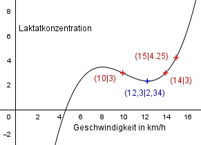

Aufgabe 143
Vor der Vertragsunterzeichnung wird die Fitness
eines Fussballspielers überprüft, indem man seine
Laktatkonzentration im Blut abhängig von der
Laufgeschwindigkeit auf einem Laufband misst. Zu
Beginn der Untersuchung beträgt sie -25. Bei
10 km/h beträgt sie 3, bei 14 km/h 3 und bei
15 km/h 4,25. Zur Veranschaulichung sioll die
Konzentration durch eine Funktion 3. Grades
dargestellt werden. Bei welcher Geschwindigkeit
ist die Laktatkonzentration am geringsten?

Allgemeine Form einer ganzrationalen
Funktion 3. Grades:
f(x) = ax3 + bx2 + cx + d
f’(x) = 3ax2 + 2bx + c
f’’(x) = 6ax + 2b
4 Bedingungen:
1. Zu Beginn der Untersuchung beträgt sie -25
bedeutet:
f(0) = -25 -->
a * 03 + b * 02 + c * 0 + d = -25 -->
d = -25
2. Bei 10 km/h beträgt sie 3 bedeutet:
(d = - 25 eingesetzt)
f(10) = 3 -->
a * 103 + b * 102 + c * 10 - 25 = 3 -->
1000a + 100b + 10c - 25 = 3 | +25
1000a + 100b + 10c = 28 I
3. Bei 14 km/h beträgt sie 3 bedeutet:
(d = - 25 eingesetzt)
f(14) = 3 -->
a * 143 + b * 142 + c * 14 - 25 = 3 -->
2744a + 196b + 14c - 25 = 3 |+25
2744a + 196b + 14c = 28 II
4. Bei 15 km/h beträgt sie 4,25 bedeutet:
(d = - 25 eingesetzt)
f(15) = 4,25 -->
a * 153 + b * 152 + c * 15 - 25 = 4,25 -->
3375a + 225b + 15c - 25 = 4,25 |+25
3375a + 225b + 15c = 29,25 III
I * (-7) + II * 5
-7000a - 700b - 70c = -196
13720a + 980b + 70c = 140
----------------------------
6720a + 280b = -56 IV
I * (-3) + III * 2
-3000a - 300b - 30c = -84
6750a + 450b + 30c = 58,5
----------------------------
3750a + 150b = -25,5 V
IV * (-15) + V * 28
-100800a - 4200b = 840
105000a + 4200b = -714
------------------------
4200a = 126 |:4200
a = 0,03
a = 0,03 in IV eingesetzt:
6720 * 0,03 + 280b = -56
201,6 + 280b = -56 |-201,6
280b = -257,6 |:280
b = -0,92
a = 0,03 und b = -0,92 in I eingesetzt:
1000 * 0,03 + 100 * (-0,92) + 10c = 28
30 - 92 + 10c = 28 |-1,25
-62 + 10c = 28 |+62
10c = 90 |:10
c = 9
Gesuchte Funktion:
f(x) = 0,03x3 - 0,92x2 + 9x - 25
Minimale Konzentration:
Bedingung f’(x) = 0
0,09x2 - 1,84x + 9 = 0 |*100
9x2 - 184x + 900 = 0
A, B, C - Formel:
A = 9, B = -184, C = 900
 184 ± √1456
x1,2 = ---------------
18
184 ± 38,2
x1,2 = -------------
18
222,2
x1 = -------- = 12,3
18
145,8
x2 = -------- = 8,1
18
f’’(x) = 0,18x - 1,84
f’’(12,3) = 0,18 * 12,3 - 1,84 =
= 2,2 - 1,84 = 0,36 > 0 --> Minimum
f’’(8,1) = 0,18 * 8,1 - 1,84 =
= 1,46 - 1,84 = -0,38 < 0 --> Maximum
f(12,3) = 0,03 * 12,3³ - 0,92 * 12,3² + 9 * 12,3 - 25 =
= 55,83 - 139,19 + 110,7 - 25 = 2,34
Die Laktatkonzentration erreicht ihr Minimum von
2,34 bei einer Geschwindigkeit von 12,3 km/h.
184 ± √1456
x1,2 = ---------------
18
184 ± 38,2
x1,2 = -------------
18
222,2
x1 = -------- = 12,3
18
145,8
x2 = -------- = 8,1
18
f’’(x) = 0,18x - 1,84
f’’(12,3) = 0,18 * 12,3 - 1,84 =
= 2,2 - 1,84 = 0,36 > 0 --> Minimum
f’’(8,1) = 0,18 * 8,1 - 1,84 =
= 1,46 - 1,84 = -0,38 < 0 --> Maximum
f(12,3) = 0,03 * 12,3³ - 0,92 * 12,3² + 9 * 12,3 - 25 =
= 55,83 - 139,19 + 110,7 - 25 = 2,34
Die Laktatkonzentration erreicht ihr Minimum von
2,34 bei einer Geschwindigkeit von 12,3 km/h.